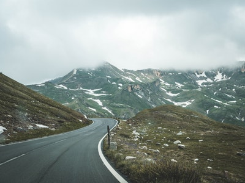
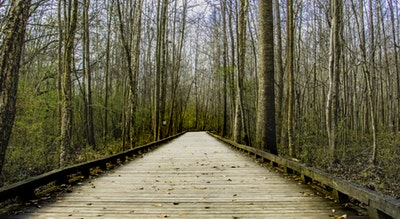
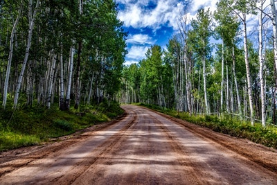
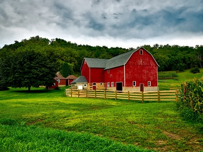

Mountain Pass on the way out of town.Sunset over the lush green plains. 
Boardwalk trail in the dense wooded area in Springfield.Up close photo of flowering weeds at sunset in Franklin. 
The road into Springfield. 
View of a corn farm on an overcast day, with a plain view of the Big Red Barn.